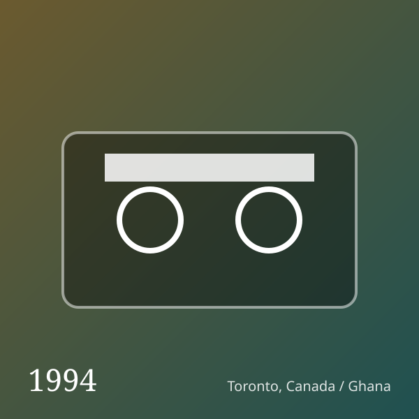

Fifty copies and twenty years

Yaw Atta-Owusu, as Ata Kak, recorded Obaa Sima in Toronto: Ghanaian highlife sped into home-made rap and drum machines. He pressed about fifty cassettes, sold a few in Ghana, and moved on with his life.
In 2002 a student found one of the tapes in a Ghanaian market stall. It took Awesome Tapes From Africa years to track him down. The 2015 reissue made a record nobody had wanted into one people won't stop playing.